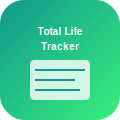

Total Life Tracker Privacy Policy
Last updated: February 20, 2026
Your Data, Your Control: All personal tracking data is stored locally and encrypted. You own and control all your life data.
Data Collection and Storage
Personal Tracking Data (Local Storage)
All data you track in the app is stored locally on your device:
- Health and fitness metrics
- Habit tracking data
- Mood and emotion logs
- Goal progress and achievements
- Custom tracking categories you create
- Personal notes and reflections
- Analytics and correlations
This data is encrypted and never transmitted to external servers unless you enable specific integrations.
Health Data Integration (Optional)
With your permission, the app may access:
- HealthKit data: Steps, workouts, sleep, heart rate, etc.
- Screen Time data: Digital wellness insights
- Calendar data: Schedule analysis and time tracking
This data is used only for analysis and correlation within the app. It remains on your device.
Data Usage and Analytics
Local Analytics
The app performs analytics and correlations entirely on your device:
- Statistical analysis of your tracking data
- Correlation discovery between different life metrics
- Trend analysis and pattern recognition
- Goal progress calculations
- Personalized insights generation
Anonymous Usage Statistics (Optional)
With your permission, we may collect anonymous data:
- Which tracking categories are used most
- General usage patterns (without personal data)
- App performance metrics
- Feature usage statistics
This data cannot be linked to you personally and helps improve the app.
Data Synchronization (Optional)
iCloud Sync
You can optionally enable iCloud sync to:
- Keep data synchronized across your Apple devices
- Backup your tracking data securely
- Restore data when setting up new devices
iCloud sync uses Apple's end-to-end encryption and is stored in your personal iCloud account. We cannot access this data.
Export and Backup
- Local exports: Export data in CSV, JSON, or PDF formats
- Complete ownership: All exported data belongs to you
- No cloud dependency: Works entirely offline
Third-Party Integrations
Apple Services
- HealthKit: Health and fitness data (with permission)
- Screen Time: Digital wellness data (with permission)
- Calendar: Schedule data for time tracking (with permission)
- iCloud: Optional data synchronization
Optional Integrations
Future versions may include optional integrations with:
- Fitness apps and wearables
- Productivity and task management apps
- Weather services for environmental correlation
All integrations are opt-in and can be disabled at any time.
Data Security
Local Encryption
- All tracking data encrypted using iOS security standards
- Protected by your device passcode, Face ID, or Touch ID
- App-specific encryption for sensitive analytics
- Secure database storage with SQLite encryption
Privacy by Design
- Local-first architecture: Data stays on your device
- Minimal data collection: Only what's necessary for functionality
- User control: Granular privacy settings
- Transparent processing: Clear data usage policies
Your Privacy Rights
Data Control
- Access: View all stored data within the app
- Export: Download your data in multiple formats
- Delete: Remove all data from the app
- Modify: Edit or correct any tracked information
- Selective sharing: Choose which data to sync or integrate
Privacy Settings
- Disable anonymous usage analytics
- Control iCloud synchronization
- Manage third-party integrations
- Set data retention policies
- Configure export and backup preferences
Data Retention
- Local data: Retained until you delete it or uninstall the app
- iCloud data: Subject to your iCloud storage policies
- Analytics data: Anonymous usage data retained for app improvement
- Support data: Communications retained as needed for support
Children's Privacy
Total Life Tracker can be used by families for health tracking:
- Parental controls for data access and sharing
- Age-appropriate tracking categories
- No collection of personal information from children under 13
- Family sharing controls through iOS Screen Time
Changes to This Policy
We may update this privacy policy to reflect new features or legal requirements. Significant changes affecting data handling will be communicated through app notifications and require your consent.
Contact Us
Questions about privacy or data handling: